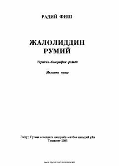

JRBuyuk shoir Jaloliddin Rumiy hayoti haqida tarixiy-biografik roman.
Bu kitob Radiy Fishning Jaloliddin Rumiy haqidagi tarixiy-biografik romani bo'lib, Jamol Kamal tomonidan ruscha aslidan o'zbek tiliga tarjima qilingan. Roman buyuk shoir va mutafakkir Jaloliddin Rumiyning hayoti, ma'naviy izlanishlari va ijodiy merosini tarixiy manbalar asosida tasvirlaydi. Asar 1986-yilda G'afur G'ulom nomidagi Adabiyot va san'at nashriyotida chop etilgan.